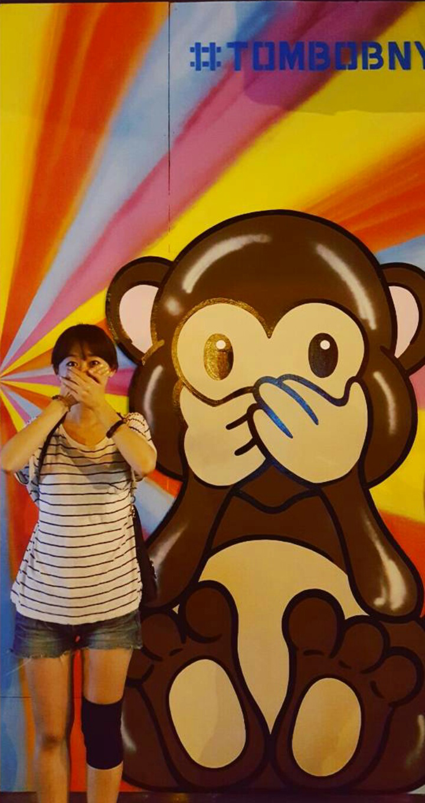

#좋아하는것 #내삶의가치관
MARVEL, 먹는 것, 따뜻한 것, 모든 종류의 동물들,
낯선 세상에 떨어져 몸으로 체험하고 배우는 것,
세상을 긍정적으로 변화시키는 모든 활동들을 좋아합니다.
소소한 일상에서 재미를 찾고 그것들이 모여 행복한 인생을 만든다고 믿고 있습니다.
#전직 #영화 #마케팅
영화 배급사에서 1년 8개월 치열하게 일하면서
꼼꼼한 예산 처리에는 우뇌를, 카피와 예고편 제작에는 좌뇌를,
조화롭게 사용할 수 있는 스킬을 획득하였습니다.
그 과정에서 다크써클도 함께 얻었지만 소중한 첫 직장 경험이었습니다.
#프론트엔드 꿈나무
스펀지처럼 쑥쑥 흡수하고 배우는 개발자가 되고 싶습니다.
지금 당장 모르는게 많고 경험은 적지만
내가 맡은 일은 잘 하고 싶고, 한 구성원으로서 제 역할을 하고 싶고,
언젠가 당당하게 '프론트엔드 개발자'라고 얘기하고 싶은 욕심이 있습니다.
3개월이라는 시간 동안 성장한 만큼 앞으로의 제 가능성을 스스로 믿습니다.